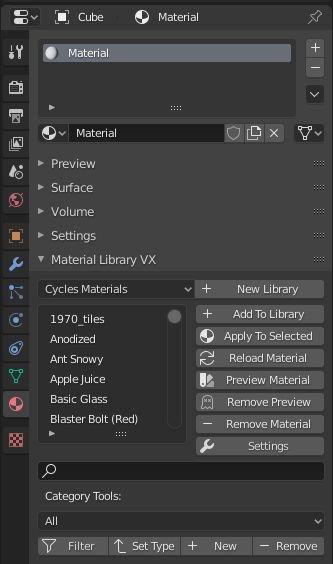
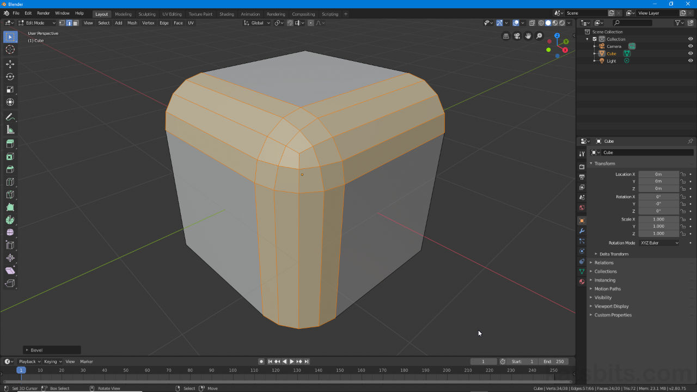
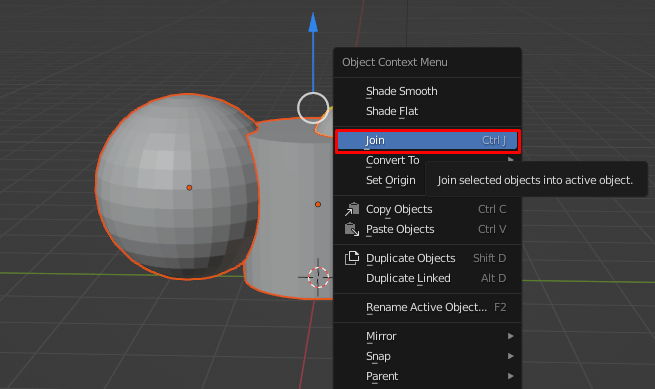

-
 Work Queue
Work Queue
-
My Ticket
Create a Ticket for your problem
Your Problem
Description
Attachment
Image files such as jpg, jpeg, png and svg etc...
Drop your image here or click to upload
Image files such as jpg, jpeg, png and svg etc...
Drop your image here or click to upload
01:00:00
What does the "Graph Editor" allow animators to do that the Timeline does not?

Add keyframes
View object hierarchy
Edit animation curves and interpolation
Render animations
What is the purpose of the "Action Editor" in Blender?
To create lighting presets
To manage and reuse animation clips
To simulate physics
To bake textures
What does the "Euler Rotation" mode help prevent in animations?
Frame skipping
Mesh distortion
Gimbal lock
Motion blur
What is the function of the "Child Of" constraint in Blender?

To parent an object permanently
To simulate gravity
To allow dynamic parenting during animation
To mirror an object
What does the "Bake Action" tool do in Blender?

Renders the animation
Converts constraints and simulations into keyframes
Applies modifiers
Bake lighting into textures
What is the benefit of using the NLA (Non-Linear Animation) Editor?

It improves render speed
It allows layering and blending of animation actions
It simplifies animations to video
It exports animations to video
What does the "Delta Transform" property do in animation?

Adds a delay to keyframes
Stores transformations relative to the original
Locks the object in place
Applies a mirror effect
What is the purpose of the "Follow Path" constraint?

To animate a camera shake
To make an object follow a curve
To simulate cloth physics
To bake lighting
What does the "F-Curve Modifier" allow you to do?

Add materials to curves
Apply mathematical functions to animation curves
Convert curves to meshes
Export curves to SVG
What is the difference between "Linear" and "Bezier" interpolation?

Linear is smoother
Bezier creates constant motion
Linear creates uniform motion; Bezier allows easing
Bezier is only for camera paths
What does the "Drivers" system in Blender allow you to do?

Animate using physics
Link properties using expressions or other properties
Export animations
Control lighting
What is the purpose of the "Grease Pencil" in animation?

To pain textures
To draw 2D animations in 3D space
To simulate fire
To rig characters
What does the "Action Constraint" do?
Limits the number of actions
Triggers an animation based on another object's transformation
Applies a physics simulation
Locks the timeline
What is the purpose of the "Motion Paths" feature?

To simulate wind
To visualize the trajectory of animated objects or bones
To create camera shake
To bake lighting
What does the "Pose Library" allow you to do?

Save and reuse bone poses
Animate facial expressions
Create new rigs
Export animations
What is the benefit of using "Constraints" over keyframes in some cases?

Constraints are faster to render
Constraints allow procedural control and flexibility
Constraints reduce file size
Constraints are easier to export
What does the "Time Remapping" feature do?
Changes the frame rate
Alters the timing of the entire animation
Adds motion blur
Bakes simulations
What is the purpose of the "Track To" constraint?
To simulate tracking in video
To make an object always face another object
To animate a camera path
To bake motion
What is the "Rest Position" in Pose Mode used for?
To reset the timeline
To view the rig without animation influence
To apply modifiers
To bake the pose
What does the "Push Down" button the NLA Editor do?

Deletes the action
Converts an action into NLA strip
Applies a constraint
Bakes the animation
What is the purpose of the "Influence" slider in a constraint?
To control the visibility of the object
To adjust how strongly the constraint affects the object
To change the object's material
To set the frame range of the constraint
What does enabling "Auto Normalize" in Weight Paint mode do?
Automatically smooths the mesh
Ensures all vertex group weights add up to 1.0
Locks the bone transformations
Applies all modifiers
Need help?